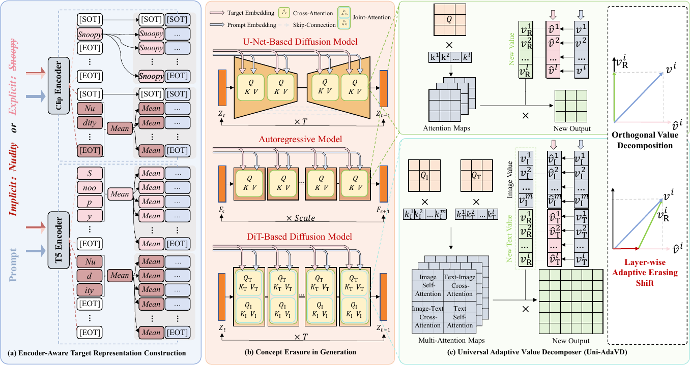
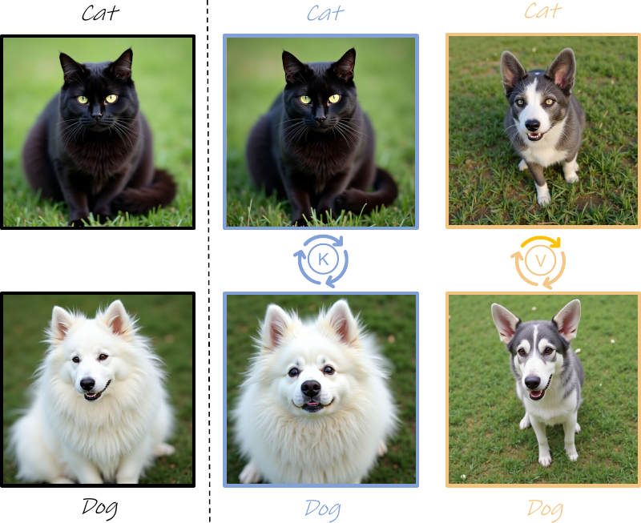

Visual generative models inevitably absorb undesirable concepts from uncurated pretraining data, making concept erasure essential for safe deployment. Existing erasure methods, however, are often architecture-specific and struggle to remove target concepts while preserving non-target content and generative priors. We present Uni-AdaVD, a universal inference-time concept erasure framework for visual generation. Uni-AdaVD treats the value space of multimodal attention as a unified intervention space and introduces encoder-aware target representation construction to localize target semantics across heterogeneous text encoders. It further combines orthogonal value decomposition with a layer-wise adaptive erasing shift to suppress target semantic directions without updating the original model weights. Extensive experiments on U-Net-, DiT-, and autoregressive image generators, as well as text-to-video models, demonstrate strong performance on single- and multi-concept erasure while preserving non-target priors.
From AdaVD to Uni-AdaVD
Compared with the original AdaVD work on U-Net-based diffusion models, Uni-AdaVD broadens value-space concept erasure to DiT, autoregressive, and text-to-video generators while also addressing more implicit unsafe concepts.
Precise, Fast, and Low-cost Concept Erasure in Value Space: Orthogonal Complement Matters
The earlier AdaVD work introduces inference-time value-space concept erasure for diffusion models and grounds the intervention in an orthogonal-complement style decomposition, which directly motivates the later OVD-style design in Uni-AdaVD.
Where to erase, what to erase, and how to erase safely

Where to erase?
Intervene in the multimodal attention value space, which stays applicable across U-Net, DiT, autoregressive, and video generators.
What to erase?
Encoder-Aware Target Representation Construction localizes the target semantics differently for CLIP-like and T5-like text encoders.
How to erase safely?
Orthogonal Value Decomposition removes target-aligned directions, while Layer-wise Adaptive Erasing Shift preserves non-target priors.
In FLUX joint attention, value swapping changes concept identity more strongly than key swapping, making value vectors a more direct and transferable intervention surface for concept erasure.
This motivates Uni-AdaVD to operate on the value side and combine OVD with LAES to suppress target semantics while preserving model priors.

Qualitative results across tasks and architectures
Qualitative comparisons are organized by task to highlight erasure efficacy and non-target preservation across image and video generation models.
Safety concept erasure from U-Net to DiT and autoregressive models
Qualitative results for targeted nudity erasure and broader unsafe concept suppression across U-Net, DiT, and autoregressive generation architectures.
Single-concept, multi-concept, and neighbor-preserving instance erasure
Qualitative results for instance erasure under single-concept, multi-concept, and neighbor-concept settings on FLUX, Switti-AR, SD v1-4, and SD v3.
Style erasure while preserving non-target artistic priors
Qualitative comparisons on FLUX and SD v3, highlighting target style removal and preservation of non-target styles.
Identity erasure with preservation of unrelated public figures
Qualitative celebrity erasure results on SD v3 and FLUX, targeting Bruce Lee while assessing preservation of other identities.
Transfer from image generation to text-to-video generation
Qualitative transfer to ZeroScopeT2V and CogVideoX for severe safety violations.
Generalization to PixArt-Σ and larger autoregressive generators
Qualitative transfer results on PixArt-Σ, Switti-AR, and Infinity-2B, illustrating generalization beyond the main benchmark models.
BibTeX
@article{zhou2026uni,
title={Uni-AdaVD: Universal Concept Erasure for Visual Generation via Orthogonal Value Decomposition},
author={Zhou, Qifan and Wang, Yuan and Hao, Yanbin and Wang, Xiang and Liu, Kuien and Hong, Richang and Wang, Meng},
journal={arXiv preprint arXiv:2607.14521},
year={2026}
}